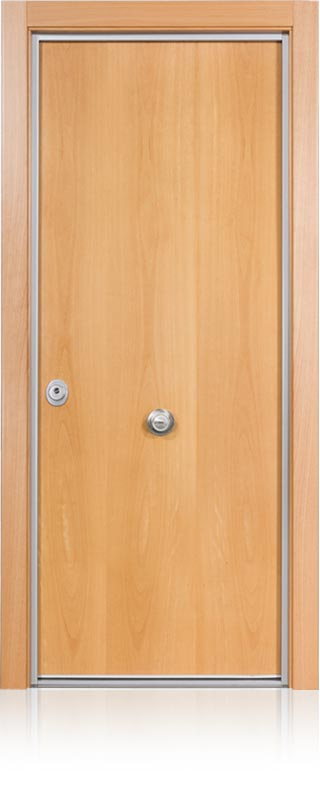

Puertas de seguridad y puertas acorazadas
Toda la gama CABMA, fabricada en España, con venta, instalación y servicio postventa en Asturias.
¿Qué puerta necesito?
Responde a tres preguntas y te decimos qué puertas encajan. Luego te las enseñamos en persona y te asesoramos sin compromiso.
Elige una respuesta en cada pregunta.
Grado 5C, el más alto de la gama, con cerámica de 7 mm.
 Grado 5C3D
Grado 5C3DPremium 5C
Puerta acorazada grado 5CGrado 4C, con omegas y barras de tetracero contra el butrón.
 Grado 4C3D
Grado 4C3DPremium 4C
Puerta acorazada grado 4CGrado 3C, la única puerta del mercado con esta clasificación.
 Grado 3C3D
Grado 3C3DPremium 3C
Puerta acorazada grado 3CGrado 4B y 23 puntos de cierre. De las que más montamos.
 Grado 4B3D
Grado 4B3DThor 20 Plus
Puerta acorazada grado 4BGrado 3B y 20 puntos de cierre. De las que más montamos.
 Grado 3B3D
Grado 3B3DThor 20
Puerta acorazada grado 3BLa única con cerradura electrónica: se abre con el móvil, con código o con llave. Grado 3B.
 Grado 3B3D
Grado 3B3DiDOM
Puerta acorazada con cerradura electrónicaLa gama económica de la serie Thor, con 10 puntos de cierre.

10 puntos de cierre3DEco-Thor
Puerta acorazada de gama económicaHecha para trasteros: 10 puntos de cierre y rejillas de ventilación.
 10 puntos de cierre3D
10 puntos de cierre3DPuerta de trastero
Puerta acorazada para trasteros
Toda la gama
Las 8 puertas CABMA que vendemos e instalamos en Asturias.
-
Grado 5C3D
Premium 5C
Puerta acorazada grado 5C -
Grado 4C3D
Premium 4C
Puerta acorazada grado 4C -
Grado 3C3D
Premium 3C
Puerta acorazada grado 3C -
Grado 4B3D
Thor 20 Plus
Puerta acorazada grado 4B -
Grado 3B3D
Thor 20
Puerta acorazada grado 3B -
Grado 3B3D
iDOM
Puerta acorazada con cerradura electrónica -
10 puntos de cierre3D
Eco-Thor
Puerta acorazada de gama económica -
10 puntos de cierre3D
Puerta de trastero
Puerta acorazada para trasteros
Compara las puertas lado a lado
Elige hasta tres y mira su grado y clase de seguridad, puntos de cierre, cerradura, cilindro y medidas, con los datos de sus fichas.
Compara el 3D con la puerta real
Cada ficha tiene su despiece en 3D. En el comparador pones cada puerta al lado de su foto de producto y la giras.
Ven a verla en persona
En nuestra sede de Gijón te enseñamos las puertas CABMA y te asesoramos sin compromiso.
- Dónde estamos
- Camino de la Xacona, 40
33392 Gijón (Asturias) - Teléfono
- 985 053 052
 Pulsa para ver la ruta
Pulsa para ver la ruta